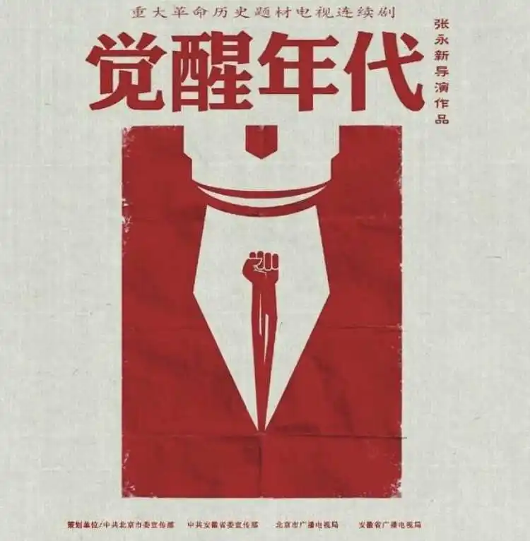
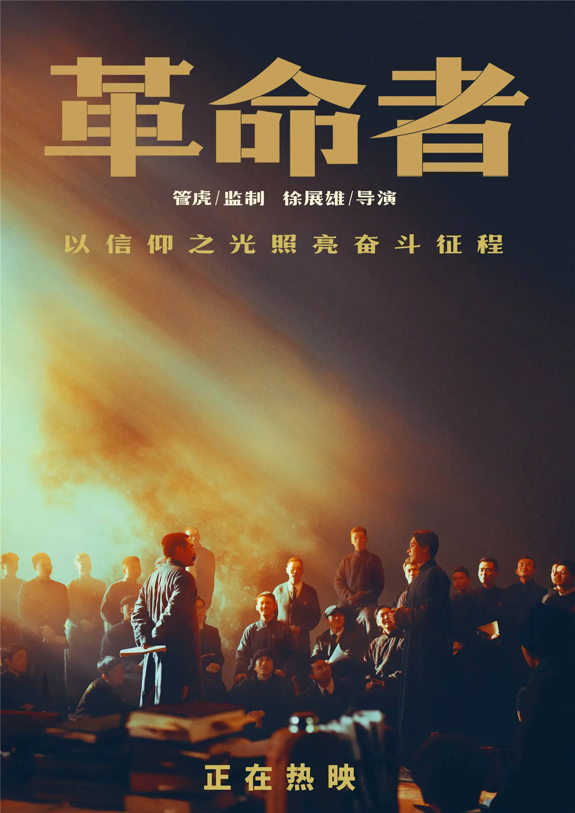
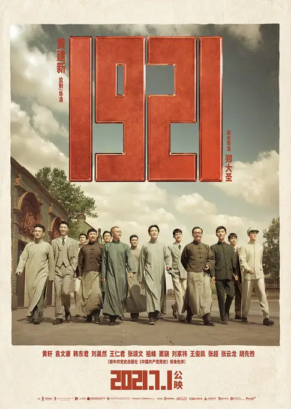

电视剧《觉醒年代》以1915年《青年杂志》问世到1921年《新青年》成为中国共产党机关刊物为贯穿，展现了从新文化运动、五四运动到中国共产党建立这段波澜壮阔的历史画卷，讲述了觉醒年代社会风情和百态人生，艺术地再现了一百年前中国的先进分子和一群热血青年演绎出的一段追求真理、燃烧理想的澎湃岁月，深刻地揭示了马克思主义与中国工人运动相结合和中国共产党建立的历史必然性。
《理想照耀中国》系列短剧是由国家广播电视总局策划组织制作的庆祝中国共产党成立100周年的主题作品，该剧以“革命时期、建设时期、改革时期、复兴时期”四个阶段的40组人物和闪光故事，记录中国共产党诞生一百年以来团结带领人民，高擎理想和信仰的炬火，谋求民族独立、人民解放、国家富强，为实现中华民族复兴中国梦不息奋斗的动人征程
《革命者》影片围绕1912至1927年波澜壮阔的历史展开，讲述了中国共产主义运动的先驱，伟大的马克思主义者，杰出的无产阶级革命家，中国共产党主要创始人之一的李大钊积极探索改变中国、拯救民族的热血历程，热忱追寻正确革命道路的故事。也正是在他的感召之下，毛泽东等一批又一批仁人志士热血青年及各阶层群众前仆后继积极投身到传播马克思主义、建立中国共产党和建设新中国的革命进程中。
1921年的上海，租界林立，局势剑拔弩张。13位来自五湖四海，平均年龄仅28岁的热血青年，从民族危亡的困境出发，将青春理想化作救国救民、寻求真理的信念，突破国际各股复杂势力的监控和追踪，在上海共聚，在陈独秀、李大钊的领导和推进下，1921年7月23日，中国共产党第一次全国代表大会在上海召开，宣告这个改变了亿万国民前途命运的政党正式成立。自此，中国历史进入了新篇章。
